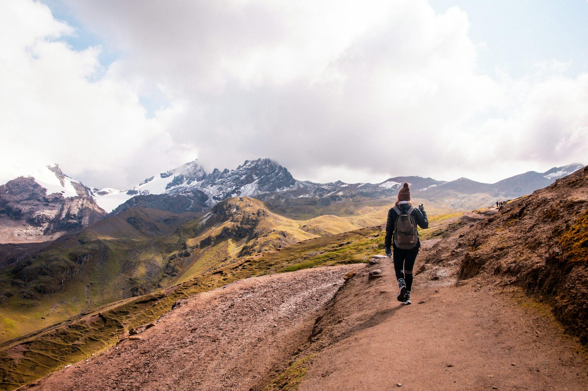

Welcome to My Portfolio
My name is Lacy Howell, and I enjoy spending time outdoors with my family whenever I have the chance. Some of my favorite activities include hiking, camping, paddleboarding, and exploring new places. I also enjoy visting national parks, especially here in Utah, where there are so many beautiful places to explore. Spending time outside helps me recharge and gives me an appreciation for the outdoors and the adventures that come with it. The theme of the site is outdoor adventure, including hiking, camping, and exploring nature.
Along with my love for the outdoors, I am also learning more about web design and development. My goal is to improve my HTML and CSS skills while creating websites that are organized, easy to use, and accessible on different devices. I plan to conintue adding new pages and features to this portfolio as I progress through my course. I hope to be able to use this knowledge at my current job and continue to grow in my careerfield.